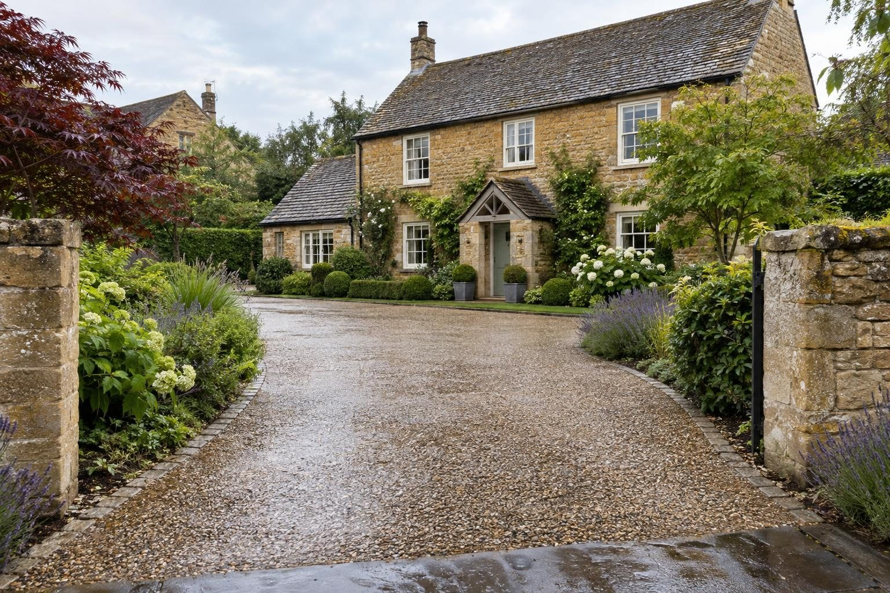

Permeable driveways in Kettering
From the Headlands to Hanwood Park, Kettering's drives sit on anything from ironstone to compacted subsoil, and the base must match.
Permeable resin bound driveways cost £150–£220 per m² as a guide, permeable block paving £140–£210 per m² and stabilised gravel £60–£100 per m², all in. In Kettering the ground decides the build-up: it ranges from ironstone to clay, new-build plots are often compacted subsoil, and on heavy clay a lined system with a controlled outlet adds to that.
- Permeable block
- £140–£210 per m²
- Planning
- Not needed for a permeable front drive
- Ground
- Ironstone and clay; compacted new-build plots
- Guarantee
- 5 years, in writing
Our 2026 guide prices, all in. Your fixed price comes in writing after the site visit. Council fees checked October 2026.
Permeable driveways in Kettering
Kettering's housing runs from Victorian and Edwardian terraces and villas near the centre and along the Headlands, through interwar and post-war estates, to Barton Seagrave and the new homes at Hanwood Park, planned for up to 5,500 homes. That spread means no single permeable design suits the whole town. A permeable driveway lets rain soak through the surface and the base into the ground, and it only works properly when that base is designed for the specific ground underneath.
Ground here ranges from ironstone to clay, and new-build plots are often compacted subsoil under a thin layer of topsoil. We check what is under each garden before choosing the base and drainage. Where it drains, the open-graded sub-base lets water away naturally. Where it does not, we line the system and fit a controlled outlet. We build in resin bound, permeable block paving and stabilised gravel, with a fixed written price after the visit.
What makes Kettering different
Kettering has 26 conservation areas, including the town centre, Barton Seagrave, Burton Latimer, Geddington and Rothwell. Its Article 4 directions are site-specific, mostly older ones covering individual streets or buildings, so we check your address before designing anything that faces the road. The River Ise runs along the east of the town, with river level stations at Barford Bridge and Slade Brook, which is worth bearing in mind for homes on that side. North Northamptonshire Council handles planning and highways.
Near the Headlands, a typical job is a Victorian or Edwardian villa where an old frontage is replaced with permeable block paving that suits the brickwork. At Hanwood Park and other new estates, it is more often a builder's drive being widened or upgraded, with the compacted subsoil dug out and an open-graded base built in its place. Either way, the ground check comes first.
You can check any address on the Environment Agency flood map.
Sources: North Northamptonshire Article 4 directions · Hanwood Park.
Permissions in Kettering
- PlanningA new or replacement front driveway needs no planning permission if it is permeable, or if the water drains to a lawn or border on your own land. More than 5m² of impermeable surface draining to the road needs planning permission. Listed buildings and the Kettering conservation area have tighter rules, so we check your address before anything is designed. Planning Portal: paving your front garden
- Design and priceWe measure up, check the ground and the planning position, and give you one fixed written price.
Rules checked October 2026.
What you get in Kettering
- Address checked against Kettering's site-specific Article 4 directions
- Compacted new-build subsoil dug out and replaced with an open-graded base
- Finishes chosen to suit Headlands villas and newer estate homes
- Extra attention to drainage for homes near the River Ise
- Surfaces that meet the front garden rule without a planning application
- Open-graded sub-base sized for your ground and the rainfall
- Lined systems with a controlled outlet where the ground will not take water
The specification
- Ground tested for how fast it takes water
- Geotextile and open-graded sub-base, no fines
- Permeable laying course
- Resin bound, permeable block or gravel surface
- Edges restrained so the surface cannot spread
- Five year workmanship guarantee in writing

“Really pleased with my new driveway. Beautifully finished, friendly professional workmen, would definitely recommend and will be using them again for the garden once other renovations complete.”
Driveway — Google review
“Absolutely great guys, job was done in good time and looks brilliant. No complaints, the driveway is immaculate. More work in the near future, thanks again!”
Driveway — Google review
Everything else we do here


Permeable driveways in Kettering: questions
What will a permeable driveway cost in Kettering?
Is there an Article 4 direction on my Kettering street?
Why does compacted new-build ground matter for a permeable drive?
We live near the River Ise. Does that change anything?
Permeable driveways nearby
Request a site visit in Kettering
We measure up, check levels and drainage, and send a written proposal with the build-up, the programme and one whole price. No pressure and no follow-up sales calls.